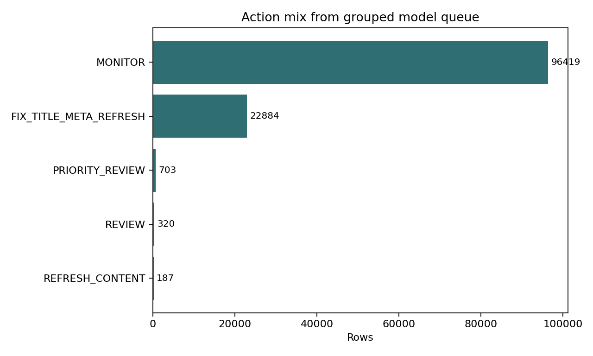
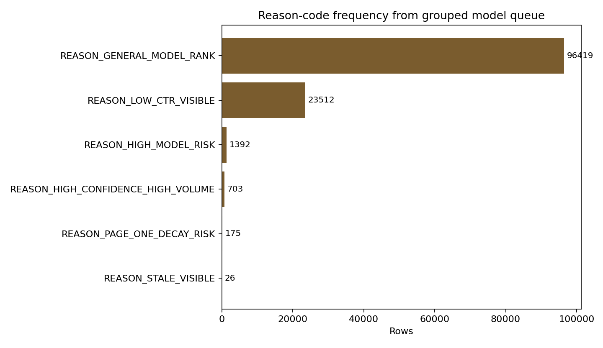

Which pages should an editor review first?
A warehouse-scale study of ranked review queues for possible content refresh, built as decision support rather than an automatic editing system.
The small tree is useful at the narrowest March cutoff, while the transparent rule is the better wider-batch default. June repeats that shape at larger queue sizes.
This paper asks which content pages an editor should review first when review time is limited.
Using March 2026 FlyRank warehouse data, I built a seven-feature depth-4 decision tree and compared it with a transparent CTR, visibility, volume, and freshness rule.
On March, the model measured 0.90 Precision@10 versus 0.80 for the baseline, while the baseline led at Precision@50 and Precision@500, and on June the model tied at Precision@10 while the baseline led at both wider cutoffs.
The labels are observational decline proxies, the March-to-June base rate shifted from 43.29% to 64.80%, and ROC-AUC stayed near chance even where top-queue precision was useful.
The practical recommendation is to use the model for a narrow first look and the transparent baseline for larger review batches, with a human checking every action.
A queue, not a verdict
The decision is simple to state: when an editor has a limited review budget, which pages deserve attention first? A useful queue can surface pages with visible search demand, weak click-through relative to a broad position expectation, or signs of staleness so a reviewer can inspect whether the right action is a title or metadata fix, a content refresh, monitoring, or no action.
Both kinds of error matter. A false positive spends scarce review time on a page that did not need attention; a false negative leaves a genuinely declining page buried in the backlog. The output therefore ranks evidence for a person rather than making a publishing decision.
From a daily warehouse to page-level decisions
Development used the March 2026 partition of fact_content_daily_performance from the FlyRank warehouse. Daily rows were aggregated to 120,513 client×content pages around a March 15 decision date, with 41 observed clients drawn from the 104-client dimension.
The final evaluation used the June 2026 sealed partition once, producing 139,347 page rows across 50 observed clients. The extracts were made with DuckDB from Hugging Face and remain local only: data/warehouse_extract/ is gitignored because the dataset terms prohibit redistributing raw data.
Seven signals, one readable tree
The warehouse label is is_declining_label = 1 when March 1–15 impressions are at least 10 and March 16–31 impressions are lower. The derived compatibility field trend_direction exists for display and label construction only; it never enters the fitted feature matrix.
ctravg_positionvisible_valid_positionctr_gap_scorelog_impressions_90ddays_since_last_updatefreshness_score
The model is a DecisionTreeClassifier with max depth 4, minimum leaf size 100, class balancing, and seed 42. Scores are out-of-fold under 5-fold GroupKFold(client_id). The baseline ranks visible pages using avg_position, ctr, impressions_90d, and days_since_last_update, with fixed weights for CTR gap, volume, and freshness.
Leakage checks excluded the label, the compatibility trend fields, trend-window columns, and both IDs. The validation audit also compared grouped and naive shuffled folds; the grouped design is the reported model result.
The narrow queue favors the tree; the wide queue favors the rule
These are observed ranking metrics, not recovery guarantees. The result is deliberately mixed: the model leads at the March top-10 cutoff, ties the baseline at the June top-10 cutoff, and the baseline leads at Precision@50 and Precision@500 on both months.
| Split / method | P@10 | P@50 | P@500 | ROC-AUC | Avg. precision |
|---|---|---|---|---|---|
| March baseline | 0.800 | 0.760 | 0.618 | 0.5082 | 0.4643 |
| March model | 0.900 | 0.520 | 0.472 | 0.5637 | 0.4764 |
| June baseline | 1.000 | 0.880 | 0.884 | 0.5582 | 0.6927 |
| June model | 1.000 | 0.820 | 0.784 | 0.5447 | 0.6831 |
March Precision@K and action counts: baseline receipt and playbook receipt. March ROC-AUC and average precision are from the executed Week 5 comparison output; the March playbook receipt currently omits those two fields. June values are from the two sealed-month receipts.


What the numbers cannot say
- This is observational decision support. It cannot show that refreshing a page causes traffic recovery; refreshed older pages may already have looked stronger before selection.
- ROC-AUC is close to chance in the March and June model results, even when top-queue precision is strong. Precision@K examines a small operational slice at the head of the ranked list, while ROC-AUC summarizes pairwise ordering across the full population, so the two can diverge.
- The March label rate is 43.29% and June is 64.80%; the shift is real in the receipts but unexplained here.
- June is one held-out evaluation, not repeated validation. It is useful as a sealed check, not a distribution-wide guarantee.
- The 41 observed March clients and 50 observed June clients do not represent every possible client mix. Revalidation is required before broader use.
Use the right tool for the queue width
Use the model for the first 10 pages. It measured 0.90 P@10 in March and tied the baseline at 1.00 in June. A reviewer should still verify the page, context, seasonality, and sample size.
Use the transparent baseline for wider batches. It led at P@50 and P@500 on both March and June, and its inputs are easy to explain and audit.
Keep the action layer human-facing. The March queue contains 22,884 visible underperforming-CTR candidates, 703 high-confidence high-volume candidates, 320 model-risk review candidates, 187 stale-but-visible candidates, and 96,419 lower-priority monitors.
Do not auto-edit. Treat PRIORITY_REVIEW, FIX_TITLE_META_REFRESH, REFRESH_CONTENT, REVIEW, and MONITOR as review labels, not automatic actions.
Everything needed is inspectable
The analysis is built to be rerun from the repository, but not from committed raw data. The warehouse extracts and generated CSV queues are gitignored and must be regenerated with a personal HF_TOKEN.
- ML-04 data contract
- ML-07 baseline
- ML-08 model
- ML-09 validation audit
- ML-10 action playbook
- Warehouse migration
- Sealed model evaluation
- Sealed baseline evaluation
- Repository
Seeds: 42. Model: depth-4 decision tree. Validation: 5-fold client-grouped out-of-fold scoring. June remains sealed except for the final evaluation receipts.